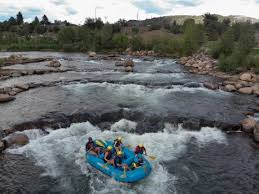

Founded in 1995 by outdoor enthusiast and seasoned rafter Marco Silva, Silva’s White Water Rafting began as a small, family-operated business in Colorado, offering guided trips down the Arkansas River. Marco’s vision was simple yet ambitious: to provide safe, exhilarating rafting experiences accessible to adventurers of all ages and skill levels. Through a combination of expert guides, top-tier safety protocols, and a passion for the sport, SWWR quickly earned a reputation for excellence. By the early 2000s, the company had expanded to multiple rivers across the Western U.S., including the Colorado, Salmon, and Snake Rivers, cementing its status as a leader in the whitewater rafting industry. Today, SWWR dominates 56% of the U.S. rafting market, a testament to its unwavering commitment to quality, customer satisfaction, and environmental stewardship. Over the years, the company has introduced innovative programs, such as adaptive rafting for individuals with disabilities and eco-friendly expeditions that emphasize conservation. SWWR has also played a pivotal role in promoting whitewater tourism, partnering with local communities to boost regional economies while preserving natural waterways. With a fleet of state-of-the-art rafts, a team of highly trained professionals, and a dedication to creating unforgettable adventures, Silva’s White Water Rafting continues to set the standard for excellence in outdoor recreation, inspiring generations of thrill-seekers to embrace the power and beauty of wild rivers.
Rapid Adventures
History
Silva's Family started as a family business, now serving 10,000+ adventurers annually. Silva's White Water Rafting is all over United States of America, with a Headquarters in Salt Lake City, Utah.
Adventure Awaits You!
